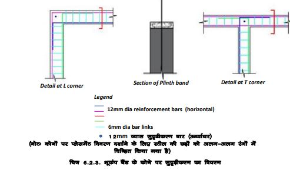
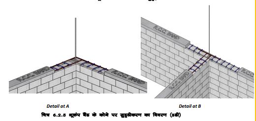

प्लिंथ को जमीनी स्तर से कम से कम 30 cm बनाया जाता है। ऊँचे प्लिंथ स्तर को प्राथमिकता दी जानी चाहिए ताकि क्षेत्र में संभावित बाढ़ के दौरान भी बारिश का पानी, सांप आदि घर में प्रवेश न करें।.
आरसीसी प्लिंथ बैंड का निर्माणः
1. ढाँचा स्थापित करें प्लिंथ बैंड का आकार बनाने के लिए लकड़ी, प्लाईबोर्ड, या लोहे की प्लेट का उपयोग करके प्लिंथ चिनाई के किनारों के साथ ढाँचा का निर्माण करें। सुनिश्चित करें कि शटरिंग सीधी लाइन में ठीक से लगी हुई है।
2. स्टील बार रखें: ड्राइंग (अगले पृष्ठ) के अनुसार आरसीसी बीम के लिए क्षैतिज सरिया प्रदान करें। कोनों पर खड़े भूकंपीय सरियो को प्लिंथ के सरियों से गुजरने दें।
3. ण्कंक्रीट डालें ढाँचा को एम20 कंक्रीट मिश्रण से भरें, वायु रिक्तियों को हटाने के लिए इसे अच्छी तरह से दुरमुट करें।
4. पानी से तराई कंक्रीट को लगभग 28 दिनों तक तराई करते रहें। दरारों से बचने के लिए इसे नम रखें। स्टरिंग को सावधानीपूर्वक हटाएं और इच्छानुसार सतह को समतल करें।
आरसीसी बैंड का विवरण
 सभी दीवारों को प्लिंथ स्तर पर एक साथ बांधने के लिए बिना किसी ब्रेक के 75mm मोटी आरसीसी प्लिंथ बैंड प्रदान की जाती है। यह नींव को भूकंप से सुरक्षा प्रदान करता है।
प्लिंथ बैंड/बीम कम से कम दो 12mm व्यास वाले सरिया बार का उपयोग करके बनाए जाते हैं। सरियों को आसपास की दीवारों में प्रवेश कराने के लिए दीवार के कोनों पर मोडे जाते हैं।
सरिये दीवारों के कोनों या टी-जंक्शन पर समाप्त नहीं होने चाहिए।
कृपया याद रखें
1.नींव और मिट्टीः सुनिश्चित करें कि जमीन समतल हो गई है, मिट्टी अच्छी तरह से जमा दी गई है, नींव को धंसने से रोकने के लिए अतिरिक्त पानी निकालने की व्यवस्था की गई है।
2.सामग्री की गुणवत्ताः मजबूती के लिए उच्च गुणवत्ता वाले कंक्रीट (एम20), ईंटों या पत्थरों का उपयोग करें और सरियों से टिकाऊ बनायें।
3.मापः दिए गए विवरणों का पालन करें, दी गई ऊंचाई और चौड़ाई बनाए रखें, संरचनात्मक समस्याओं से बचने के लिए सटीक माप और स्तर सुनिश्चित करें।